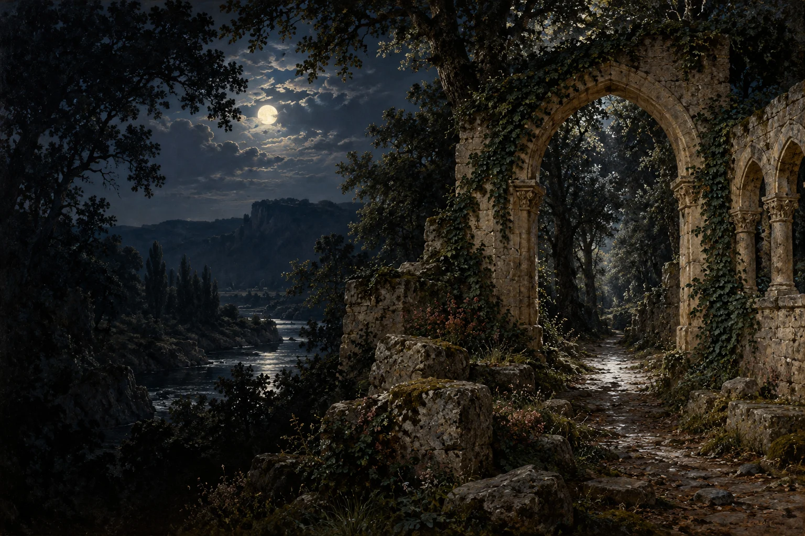
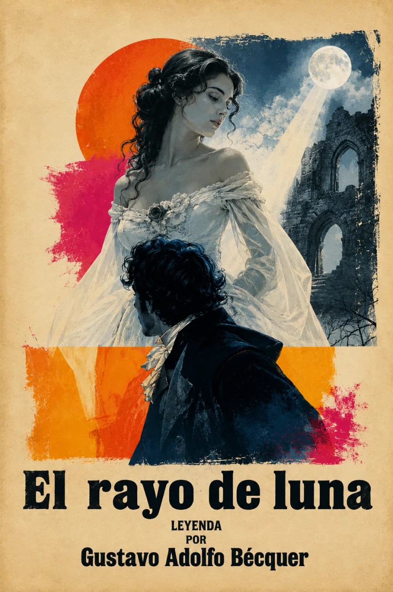

Audiolibros · Tercera Ola
El rayo
de luna
Gustavo Adolfo Bécquer · Publicado en 1862
Lo que el deseo cree ver.
Una claridad entre las hojas.
Un sendero que parece guardar una promesa.
La noche toma la forma de una ilusión.

Entre lo visto y lo imaginado.
Volumen

Cuando mirar es inventar
Manrique ama la soledad y transforma cuanto le rodea en materia de imaginación. Una noche, entre las ruinas de los Templarios junto al Duero, cree ver el borde blanco de un vestido. La búsqueda que comienza allí recorre el paisaje de Soria y, sobre todo, el mundo que él mismo proyecta.
Cada indicio parece confirmar un encuentro que el deseo ya ha decidido imaginar.
Los rumores, las sombras y los reflejos se convierten en señales. Bécquer hace que el lector siga esa interpretación y después vuelva sobre ella: la leyenda no depende de demostrar una aparición sobrenatural, sino de la distancia entre percibir, creer y conocer.
Texto de referencia: El rayo de luna. La cabecera interpreta la luz y las ruinas del relato; no reconstruye un monumento concreto ni presenta la figura imaginada como una presencia real.
La lectura
El rayo de luna · Leyenda completa
Una lectura continua. Claves de escucha: la soledad de Manrique, los indicios, la búsqueda y el desengaño. Son orientaciones temáticas, no títulos originales. Grabación pendiente de incorporación.
Reseñas

4.4 / 5 · Quetzales